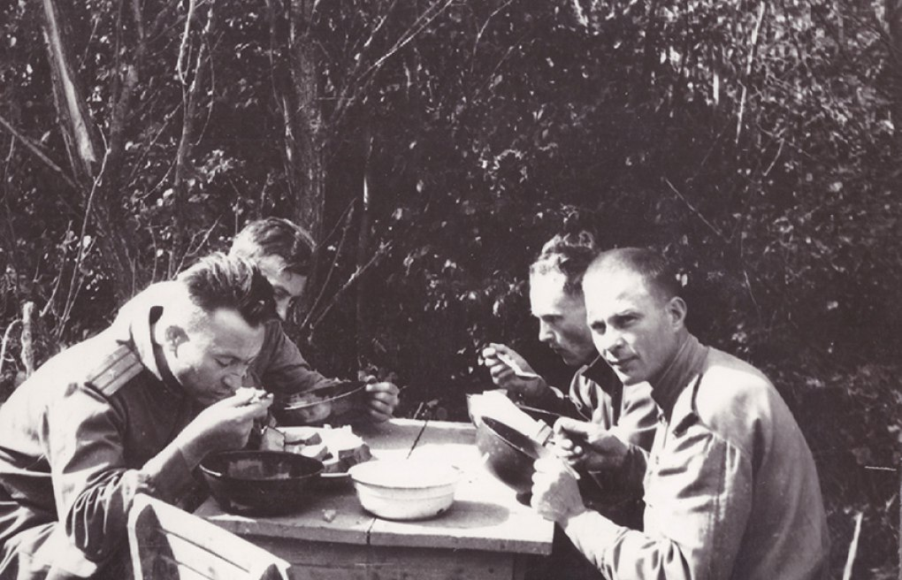
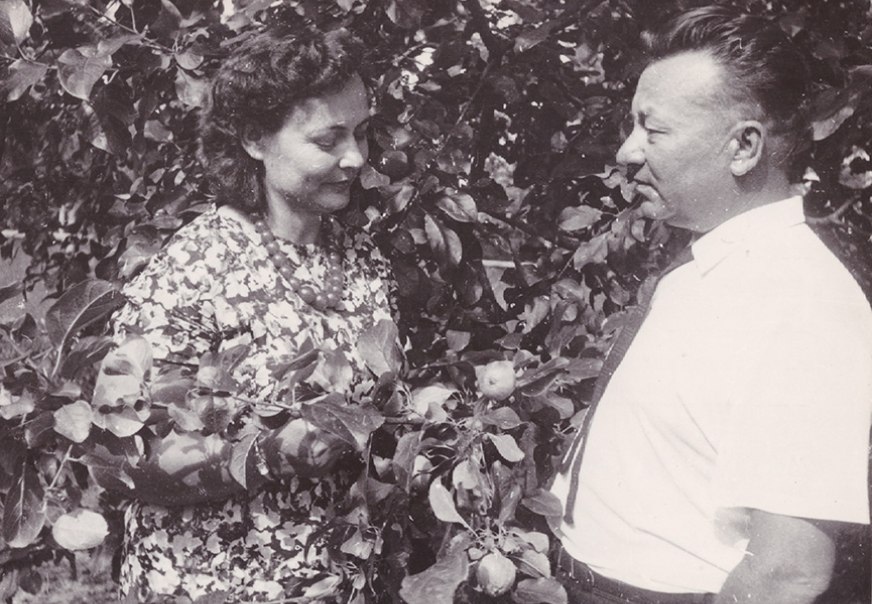
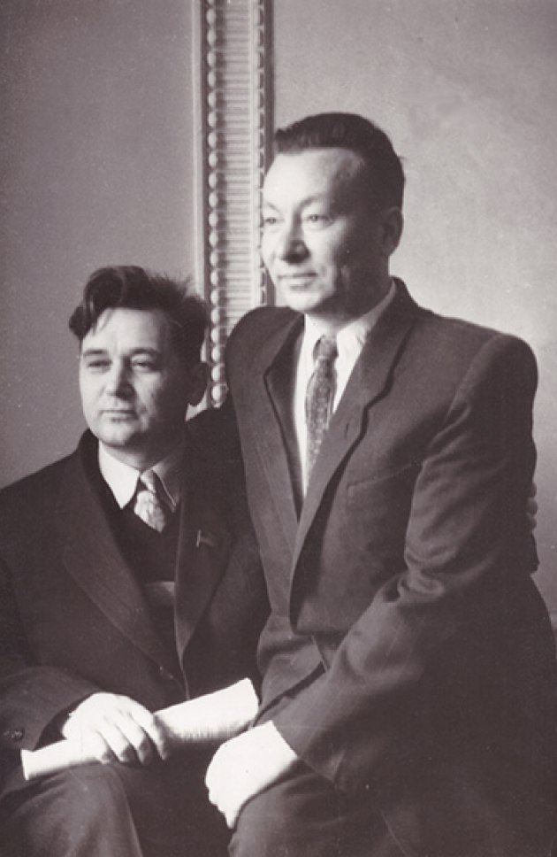

Людина полум’яного темпераменту,
творчого шаленства. Олесь Гончар
ПЕРЕЇЗД, ВІЙНА І НЕОЧІКУВАНІ ЗМІНИ

Андрій Малишко в період війни
То були 1930-ті рр. Андрій Малишко працював журналістом у журналі «Молодий більшовик», де зустрів свою майбутню дружину Дарину Ліфшиць. Після одруження жили в невеличкій кімнатці на вулиці Л.Толстого, 25 (тепер вул. Павла Скоропадського, 25). Будівлю, де була та кімнатка, ще називали «будинок журналіста». Незабаром подружжя переїхало в Роліт у квартиру №7. 29 грудня 1937 р. у них народилася доня Валентина. Зі слів ролітівців сім’я жила в злагоді без сварок. Однак усе змінила Другова світова…
Дарину з донькою Валентиною евакуювали до Уфи разом з иншими сім’ями ролітівців. Наступні три роки вони жили в родині Асилбаєвих. Андрій Малишко залишився в Україні й пішов на фронт добровольцем. У 1943 р. став членом ВКП (б). Під час війни працював військовим кореспондентом у фронтових газетах «Красная Армия», «За честь Батьківщини», і в партизанській газеті «За Радянську Україну». Писав листи до люблячої сім’ї. Ось декілька з них:
«Вдома у нас все гаразд, няня оберігає квартиру, але в ній нема ні сонця, ні літа, ні вас, рідні мої! Всі мої друзі на фронті, батьки під німцями, а ти з Валюшкою так далеко, що й не докличуся. Хоч би вітром з України донесло вам мою печаль за вами, хоч би сонцем зійшла над вами моя добра звістка, любі мої, далекі!...» (від 5.ІХ.1941 р.)
«Як там Валюшка, чи згадує мене? Мені дуже жаль, що я не зміг з нею посидіти останнього вечора, поговорити більше з тобою, а хотілося так багато сказати і ще більше почути від тебе». (З листа мамі від 27.II.42 р.)
«...але в квартирі немає ні сонця, ні літа, ні вас, рідні мої!.. Хоч би вітром з України донесли вам мою печаль за вами, хоч би сонцем зійшла над вами моя добра звістка, любі мої, далекі!..» (З листа від 5.ІХ.41 р. — Действ. армия, 28 пол. почта. Политуправ. Ю-Зап. фронта, газета «За Радянську Україну»)
Після війни Малишко повернувся не сам. А з жінкою на ім’я Майя, з якою переїхав на вулицю Володимирську. Там вони отримали дві кімнати, третю кімнату у квартирі займав демобілізований полковник із дружиною і дорослою донькою. Невдовзі Малишко розлучився з першою дружиною. Донька важко сприймала те, що тато покинув сім’ю. А саму Майю згадувала такою: «Майя ніколи не образила мене, завжди намагалася підгодувати, не відпустити голодною, гралася зі мною — зрештою, я була для неї — велика лялька, вчила мене свистіти через п’ятнадцять копійок, — бо й сама була, по суті, дівчиськом...» Втім попри красу і ніжну вдачу нової дружини, пристрасть повільно згасала. Пара не мала спільних інтересів, що стало причиною для розлучення. Дочка поета згадує, що батько спершу бажав повернутися до Дарини іфшиць:
«Давай хоч поговоримо, Дашенько!» «Про що, Андрію?» «Як про що — про Валюшку…»
Попри образи Валентина Малишко все одно навідувала тата. Іноді сварилися, але все одно навчалася життєвої мудрости в старшого. Немало людей зазначали їхню схожість і в зовнішності, і в характері.
СТОСУНКИ З ИНШИМИ СПІВМЕШКАНЦЯМИ
Мешканцем Роліту Андрій Малишко знову став у 1954 р. Жив у квартирі №68. Друзі пам’ятають його високим, чорнявим, веселим, із монголоїдними рисами обличчя. Він любив жартувати, а ще більше – співати. Любов до пісні перейшла від його матері Ївги Остапівни, до якої він часто звертався у своїх творах. Окремий вірш, присвячений винятково матері має назву «Материнська». У своїй «Автобіографії» 1959 року поет згадував, що материнська пісня стала постійною супутницею його життя і єдиною неприємністю в них для нього були сумні кінцівки.
Ролітівці часто слухали його гру на баяні, якої поета навчив старший брат Василь. Любив і поважав Малишко Максима Рильського. Було то взаємно: Максим Тадейович любив його, як сина – шанував, як поета. Та при одній розмові сказав таке: «Андрію, я люблю тебе і шаную. Двері мого дому завжди відкриті для тебе. Приходь, завжди будеш бажаним гостем. Але, пробач, я до тебе не прийду: не можу заходити в дім, де немає Даші і Валюшки. Пробач...» Дружив поет також з Михайлом Чабанівським, Анатолієм Шияном.

Любов Забашта й Андрій Малишко
Полюбляв Малишко і в карти грати. Валентина Андріївна згадує, що виграти в нього було важко, а коли подібне траплялося, то той ледь не до сліз засмучувався. Під час гри часто міг забігти в кабінет на хвилину-другу записати декілька рядків, аби не забув.
Вже в 1959 р. поет одружується втретє – з поетесою Любов Забаштою. А втім виявилася вона не такою, якою спершу бачив її Малишко. Часто казала письменницям:«Малишко буде для мене трампліном у Спілці.»
НОВИЙ ПЕРІОД ТВОРЧОСТИ

Олесь Гончар й Андрій Малишко
З переїздом у кооператив розпочався і новий період у творчості поета. Зі збірки «Що записано мною» (1956) відомими є такі твори, як: «Знову цвітуть каштани», «Пісня про Київ», «Як на дальнім небосхилі». У 1959 р. виходить збірка «Серце моєї матері», відомими творами в якій є: «Пісня про рушник», «Ми підем, де трави похилі» – а в 1960 р. збірка «Полудень віку» подарувала нам вірш «Вчителька». Музику до відомих поезій допомагали писати такі музичні корифеї, як брати Майбороди, Л. Ревуцький, П. Козицький, М. Вериківський, А. Штогаренко, С. Козак, О. Білаш. Друзі також згадували, що Малишко сам складав слова до вже написаної музики й робив це дуже легко та поетично. Іноді самостійно складав мелодії до своїх віршів.
«Людина полум’яного темпераменту, творчого шаленства, він згорів довчасно, упав на пів шляху, полишивши нам золоті розсипи своїх поезій, нев’янущу красу своїх пісень», — так про Андрія Малишка відгукувався його колега Олесь Гончар.
Загалом життєвий доробок Андрія Малишка складає 40 збірок. У спадщину митця також входять публіцистичні і науково-критичні праці, тексти пісень до фільмів, сценарії до кінокартин. У 1969 р. йому присвячено науково-популярну стрічку «Андрій Малишко».
Однією з найіконічніших поезій відомого автора стала «Україно моя». Про її вплив на свою творчість згадує Стус у листі (датованим 13 грудня 1962 р.) до поета: «Я знаю, що заради щастя рідного народу я міг би всім пожертвувати, я знаю, що тут я вихований рідним духовним хлібом — "Жагою" М. Рильського, Вашим віршем "Батьківщино моя".» Однак, як помітно, назва вірша инша. А все через цензуру видавців, чиї брудні руки дібралися й до цього твору через довгий час після його публікації. «Україно моя» було замінено на «Україно Радянська» або «Батьківщино моя». Розпочалися закиди і звинувачення в «українському буржуазному націоналізмі», поки Малишко не дописав строфу про «синів Росії», з якими поряд стояли українці…
СКЛАДНІ 60-ТІ
Непростими роками для митця були 60-ті. У травні 1966 р. він активно протестував проти арештів української інтеліґенції, що починалися з новою хвилею. Звичайно, подібна «зухвалість» владі не була до вподоби й було прийнято рішення надіслати вказівку Спілці письменників України, аби вона висловила своє незадоволення подібним діям поета. Однак О. Гончар – тодішній голова Спілки – вказівки не виконав.
Незважаючи на це молоді поети любили його і часто зверталися за допомогою. Серед них були Василь Стус, Микола Вінграновський, Іван Драч та багато-багато инших.
Водночас у ті роки Андрій Малишко голова правління Українського громадського відділення Агентства преси «Новини».
ОСТАННІ ДНІ…
І от різко поет опиняється у феофанівській лікарні. Серце, тиск ніяк не давали спокою. Спершу донька навідувала батька, але через грип запровадили карантин і відвідини заборонялися. Усе ж його дружині Любов Забашті вдалося прийти до чоловіка, маючи з ним наступну розмову:
«Ти тут окопався, а я сиджу без грошей. Сідай, пиши доручення.» (У них були сварки через дачу в Кончі-Заспі.)
Під час розмови Андрію Самійловичу різко стало погано, тому дружину змусили вийти з палати. О другій ночі вона подзвонила Валентині Малишко зі словами, що батькові дуже зле. Вона різко вночі приїхала в лікарню, але було вже пізно. Під подушкою поета лежала перша видана книжка його доньки «Журавлі дитинства»…
За вісім днів до смерти Андрій Малишко пише свій останній твір «Стежина», в якому роздумує про життя людини… 17 лютого 1970 р. у віці 57-ми років серце поета перестало битися назавжди. Похований на Байковому кладовищі. На прощання з ним прийшло сотні людей, серед яких були не лише літератори. У 1973 р. на могилі було встановлено надгробний пам’ятник з мармуру, скульпторкою якого стала Галина Кальченко.
Олесь Гончар записав у своєму щоденнику цю сумну звістку так:
«(В поїзді)
Помер Малишко. Дізнався про це в Москві. Так глибоко вразило це... Перед від'їздом до Москви мав з ним розмову телефонну (він був у лікарні), і досі відчувається його смутний, зболений, беззахисний голос: «Рана не заживає, і мене це так пригнічує... Так пригнічує...» Хоч рана була ніби й нестрашна і не від неї він помер. Мабуть, то вже було передчуття. А ще перед тим, тижнів за два, зайшов до нас додому свіженький, веселий, привітний, розповідав про якогось діда, що став його лікувати, і як добре себе після того відчув. Збив тиск.
– Років п'ять не почувався так добре...
Якої енергії, яких могутніх генів була ця людина. Згадую його молодим, жахким, вогнистим. Після війни він перший надрукував мої вірші. Згадую його виступ в Клубі Ради Міністрів в 1956 р., коли один з літераторів сидів у залі, злякано зімкнувши руки, щоб не аплодувати, сидів і тер їх від страху – такі безстрашні речі говорив з трибуни Малишко. Вийшов на трибуну малим, на паличку спирався (щось було в нього з ногою), плохенький такий, – з трибуни вертавсь клубком вогню, титаном, і паличку свою на сцені забув... Складна була людина. І нелегка. Але в цьому ось вся його правда: «Україно моя, мені в світі нічого не треба. Тільки б голос твій чути і ніжність твою берегти». Він не був від природи аж надто хоробрим. Але ж ми бачили його відвагу, моменти безстрашшя. Мужнім його робила любов.»
Іван Драч на смерть свого захисника в тяжкі часи написав наступні рядки: «Над гінким осокором, де вимерзла рута, у небо полинув м’який, як пір’їна, рушник, внизу замерзала від сліз Україна. Україна оплакувала свого талановитого, вірного Сина.»
У 1973 р. на фасаді Роліту встановлено бронзову меморіальну дошку (скульптор І. В. Макогон).